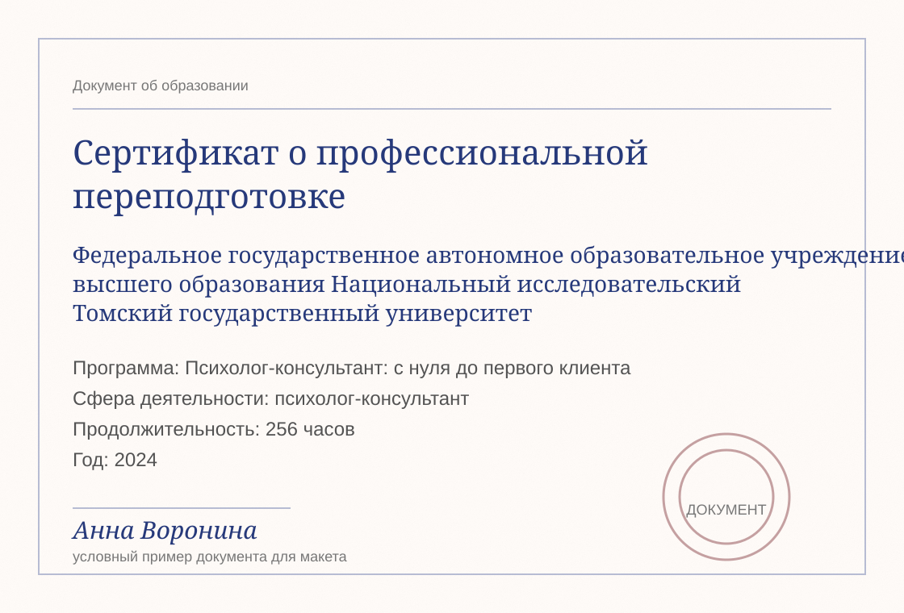

Сибирский Государственный медицинский университет
Программа: клиническая психология и основы консультирования
Сфера деятельности: психологическое сопровождение взрослых
Продолжительность: 320 часов
Санкт-Петербург · зарегистрирована на платформе 2 года
Психолог-терапевт с более чем 10-летним опытом. Работаю в рамках гештальт-терапии, поддерживая клиентов в поиске баланса между внутренними потребностями и внешними обстоятельствами.
Мой подход интегративный. Это означает, что я использую только то, что действительно работает, и подбираю индивидуальный путь для каждого клиента.
Программа: клиническая психология и основы консультирования
Сфера деятельности: психологическое сопровождение взрослых
Продолжительность: 320 часов
Программа: профессиональная переподготовка «Психолог-консультант: с нуля до первого клиента»
Сфера деятельности: психолог-консультант
Продолжительность: 256 часов
Программа: гештальт-терапия в индивидуальной практике
Сфера деятельности: терапевтическая работа с запросом клиента
Продолжительность: 180 часов
Программа: арт-терапия в индивидуальной и групповой работе
Сфера деятельности: работа с эмоциями и образным мышлением
Продолжительность: 144 часа
Программа: индивидуальное психологическое консультирование
Сфера деятельности: семейные отношения и личные границы
Продолжительность: 256 часов
Программа: психотерапия и экспертная оценка практики
Сфера деятельности: супервизия и профессиональная рефлексия
Продолжительность: 216 часов
Список конференций при Музее сновидений Фрейда, регулярные встречи и обсуждения.
Узнать подробнееРегулярные группы чтения и профессиональные обсуждения для специалистов.
Узнать подробнееВстречи для разбора практических случаев и развития профессиональной опоры.
Узнать подробнееРабота с материалами наблюдений и обсуждение терапевтических процессов.
Узнать подробнееОткрытый цикл встреч о бережной коммуникации и устойчивости специалиста.
Узнать подробнееПроект объединяет клинические наблюдения, статьи и прикладные упражнения.
Узнать подробнее«Обращалась к психологу с запросом, связанным с тревожностью и внутренним напряжением. Работа проходила в комфортной и доверительной атмосфере. Специалист внимательно относится к деталям, помогает структурировать мысли и постепенно находить...»
«Очень рада, что попала именно к этому психологу. С первой встречи почувствовала, что меня действительно слышат и понимают. Не было ощущения давления или оценивания — наоборот, появилось чувство безопасности.»
«Обращалась к психологу с запросом, связанным с тревожностью и внутренним напряжением. Работа проходила в комфортной и доверительной атмосфере. Специалист внимательно относится к деталям, помогает...»
«После нескольких встреч стало легче замечать собственные реакции и не проваливаться в привычную тревогу. Очень ценю спокойный темп и внимательность к деталям.»
«Работа помогла лучше понять, где заканчиваются ожидания других людей и начинаются мои собственные желания. Было спокойно, бережно и очень профессионально.»

Связаться со специалистом
Отзыв клиента